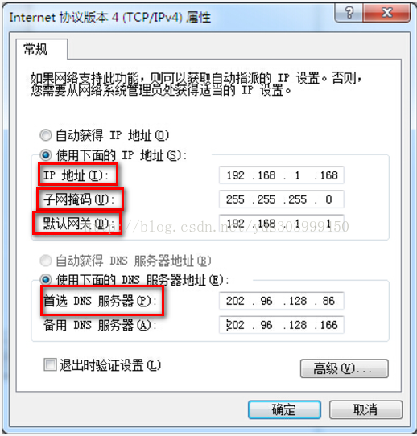
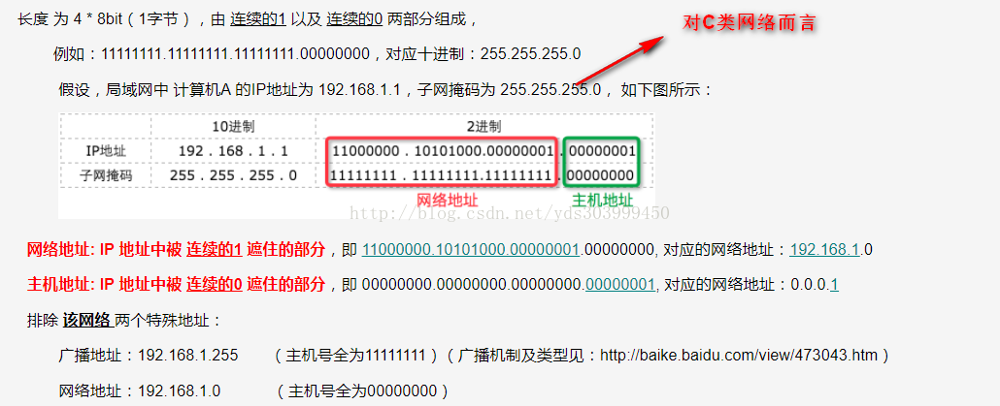

前言：以windows下面的Internet协议版本4为例来说明，如下图所示：

问题一、什么是ip?为什么需要ip?
ip地址是计算机之间进行网络通信所必须的，它标识了不同计算机的身份，ip地址=网络地址+主机地址(又称网络号+主机号);
我们去访问另一台计算机时，需要先找到另一台计算机所在的网络号，再获取该计算机在此网络中的主机号，才能成功通信。
以上图为例：192.168.1.168(ip地址)=192.168.1.0(网络地址)+0.0.0.168(主机地址)；
问题二、什么是子网掩码？我们为什么需要它？

注意点1、子网掩码与ip地址作"与"运算，可以得到该网络的网络号,也就是网络地址，仅有ip地址我们是无法得知要进行通信的计算机处在哪个网络地址上的，所以ip地址必须要搭配子网掩码来使用；处于同一网络上的两台计算机之间是可以直接通信的，而不同网络上的计算机之间是无法直接通信的，此时就需要网关上场啦！
注意点2、同一网络不是指物理连接,而是指网络地址。用网线将两台计算机直接连接起来，但是在两台计算机上分别设置不同的网络地址，则它们之间也是无法直接进行通信的！
问题三、什么是网关？为什么需要网关？
（1）、连接两个不同的网络的设备都可以叫网关设备；网关的作用就是实现两个不同网络地址之间的通讯与控制;
（2）、网关设备可以是 交换机、路由器、启用了路由协议的服务器、代理服务器、防火墙等;
（3）、网关地址就是网关设备的IP地址，假设我们有两个网络：
网络A的IP地址范围为“192.168.1.1~192.168.1.254”，子网掩码为255.255.255.0
网络B的IP地址范围为“192.168.2.1~192.168.2.254”，子网掩码为255.255.255.0
要实现这两个网络之间的通信，则必须通过网关。
（4）、如果网络A中的主机发现数据包的目的主机不在本地网络中，就把数据包转发给它自己的网关，再由网关转发给网络B的网关，网络B的网关再转发给网络B的某个主机。 就好像海关一样，不同国家的公民要进行互访，必须通过海关！
特别说明1：一台主机可以有多个网关，默认网关的意思就是当一台主机找不到可用的网关时，就会将数据包发给默认网关，由默认网关来处理数据包；
特别声明2：网卡(又叫网络适配器)负责的是物理层和数据链路层，网卡上有MAC地址，对应着网络层中的ip地址，同时网卡还负责将数字信号转换为光电等信号与电缆、光缆进行通信； 而网关是网络层的应用，主要负责ip地址的路由选择；
问题四、什么是DNS?为什么需要DNS?
DNS就是域名解析服务器，它提供了域名到ip的映射，我们平时访问网站时都是输入的域名,如：www.sina.com，因为它便于记忆，
而网络之间的通信是需要ip地址的，所以就必须使用DNS来完成域名到ip地址的解析！


![]()
 3210
3210

 更多相似内容
更多相似内容